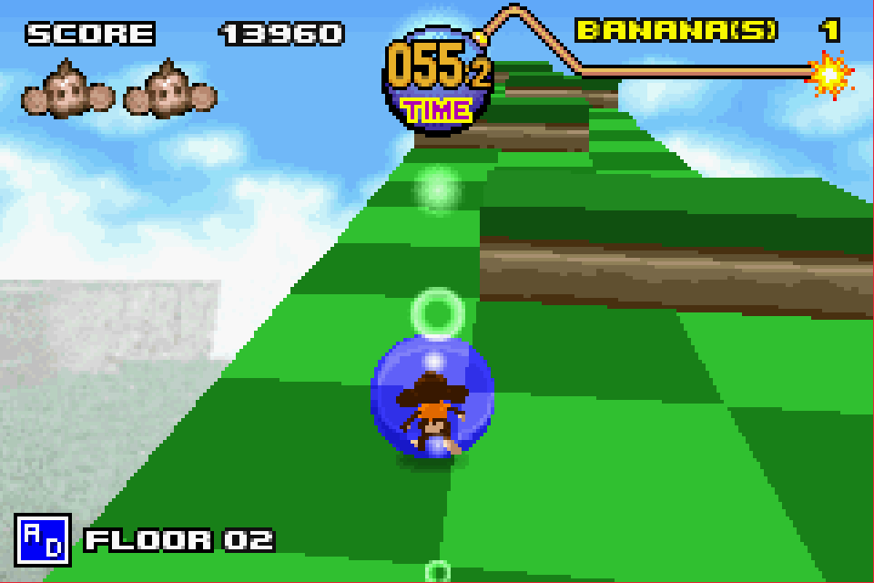
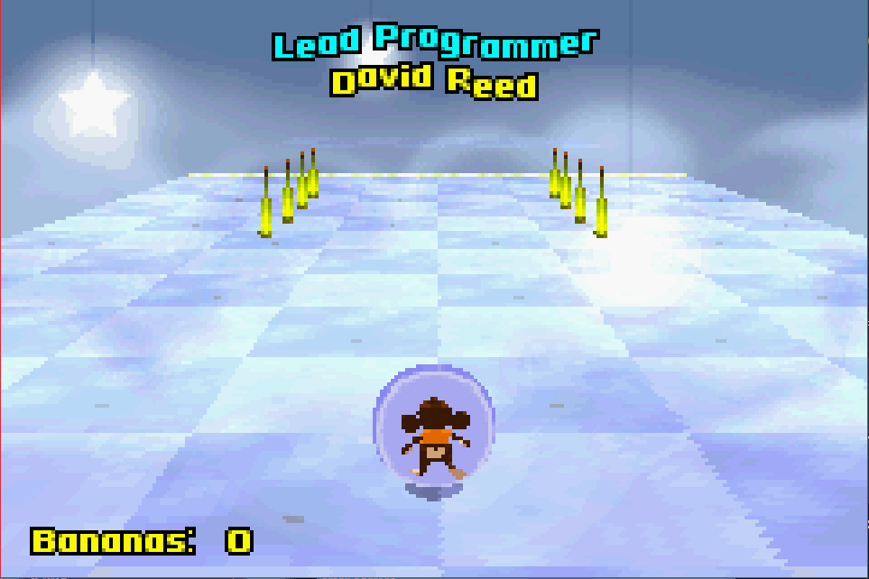
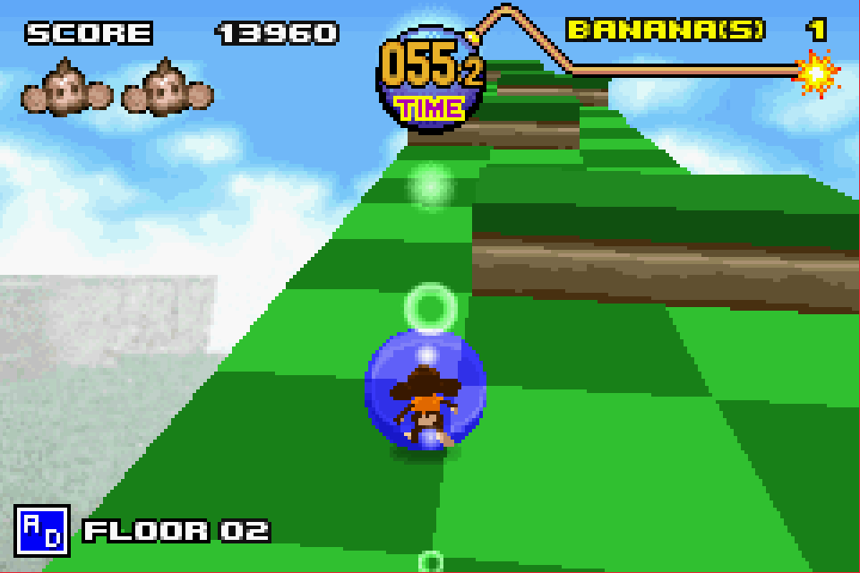
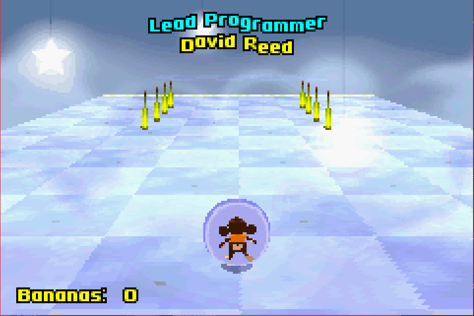

Complete on 2018-05-3
Complete on 2018-05-3
4 / 5
Release Date: Nov 19, 2002
Meta Score: 82
Complete on 2018-05-3
4 / 5
Release Date: Nov 19, 2002
Meta Score: 82
 



Super Monkey Ball Jr is a port of the monkey rolling game that started in arcades, and then moved on to consoles starting with the Gamecube. It's a classic marble rolling style game, where the "marbles" are monkeys in hamster balls.
Yes, it's a weird concept, but well executed.
Basic gameplay is to roll your monkey (from a choice of 4) to the end of each stage. The dpad tilts the stage, along with a or b for finer control. That's basically it, but you have to contend with ramps, narrow platforms, moving platforms, pinball-style bumpers etc, as the game ramps up in difficulty. It starts very simple but gets very hard when combined with the timer pushing you forward (which maintains a fast pacing throughout).
This all works well enough, but the lack of an analog stick is a bit of a loss. This combined with the inability to control the camera (which just follows the direction you roll), can make navigating narrow pathways frustrating. You really need the camera to line up along the path so you can roll directly along the path, but you can't directly manipulate it so you end up fiddling around trying to get lined up right. This was annoying.
There are 3 difficulties/modes: Beginner (with 10 stages), Advanced (20), and Expert (30). Each has some extra stages at the end if you finish without continues (more on this in a second). I played through Beginner and Advanced. Beating any mode ends in the credits, and since Advanced seems to be normal mode, I called that done. I tried Expert, but it seems a lot harder.
Playing the game earns you points, which apart from high scores for each mode, are used to unlock extra game features like minigames. You accumulated these whatever you do, so this just locks the features behind play time really. Nothing spectacularly interesting seemed to be forthcoming here.
The lives and continues system is a bit dumb. You start with 2 lives and if you die, you lose your accumulated score and the chance for the extra stages at the end of the mode. Initially you can continue 5 times, but (according to the internet) one of things you can unlock is infinite continues. This seems obnoxious to me. Either just let me retry infinitely from the start, or not at all. Don't lock it behind some arbitrary play time gate.
Graphically the game is 3D rendered, but the simple and abstract style means it looks decent (unlike most other 3D rendered games on the GBA). There are some draw distance issues in longer stages though, which is a little annoying.
Overall, a decent enough port, but with some issues and a little lacking in content.